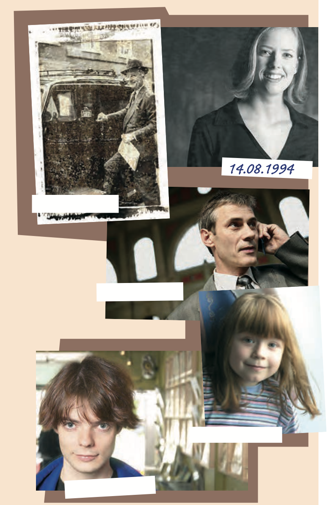
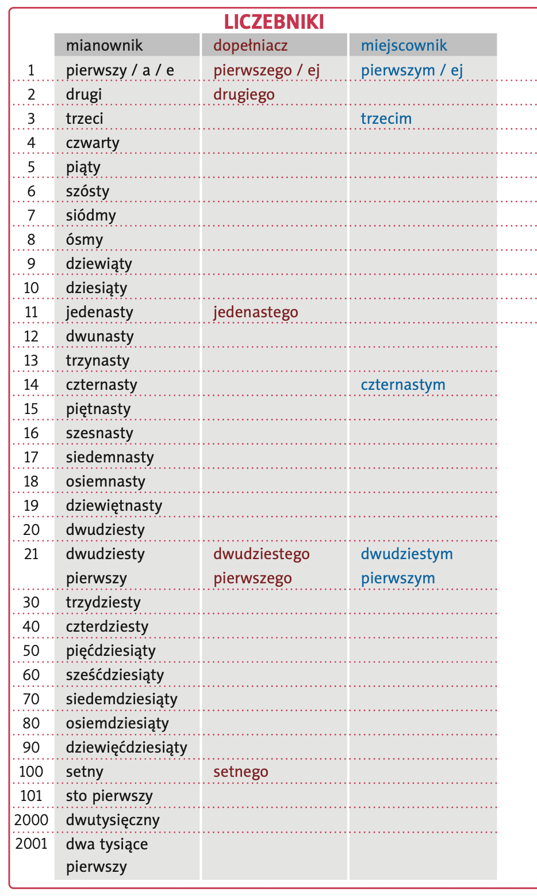
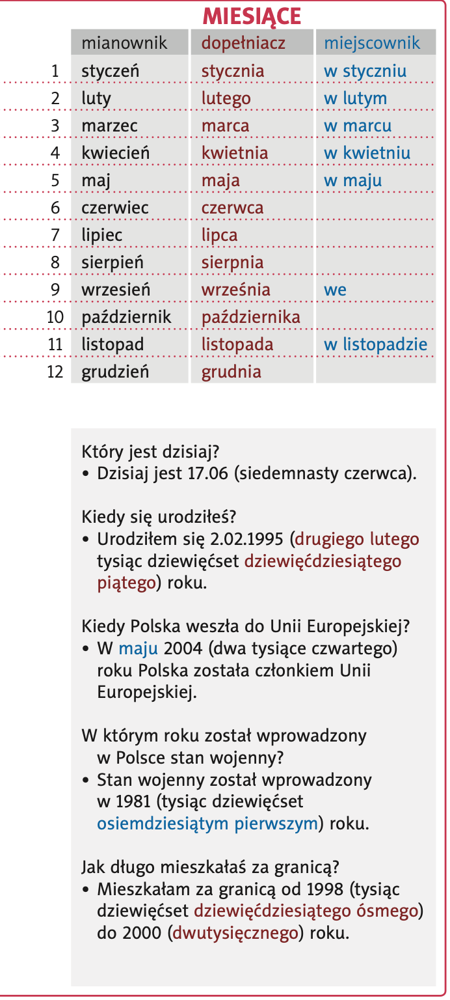
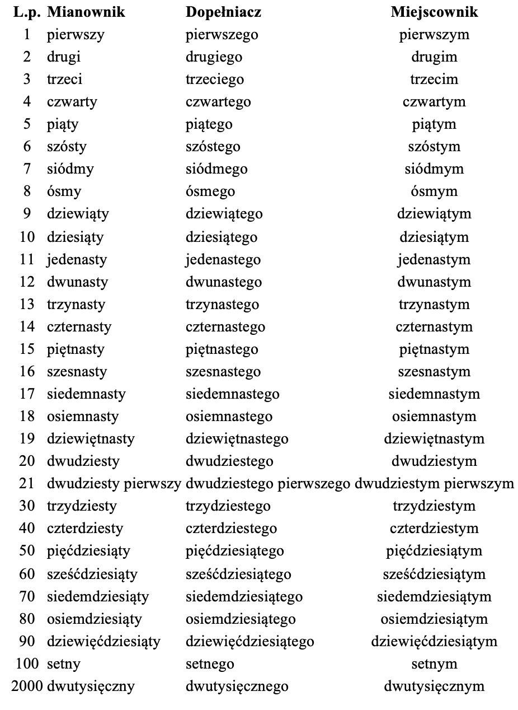
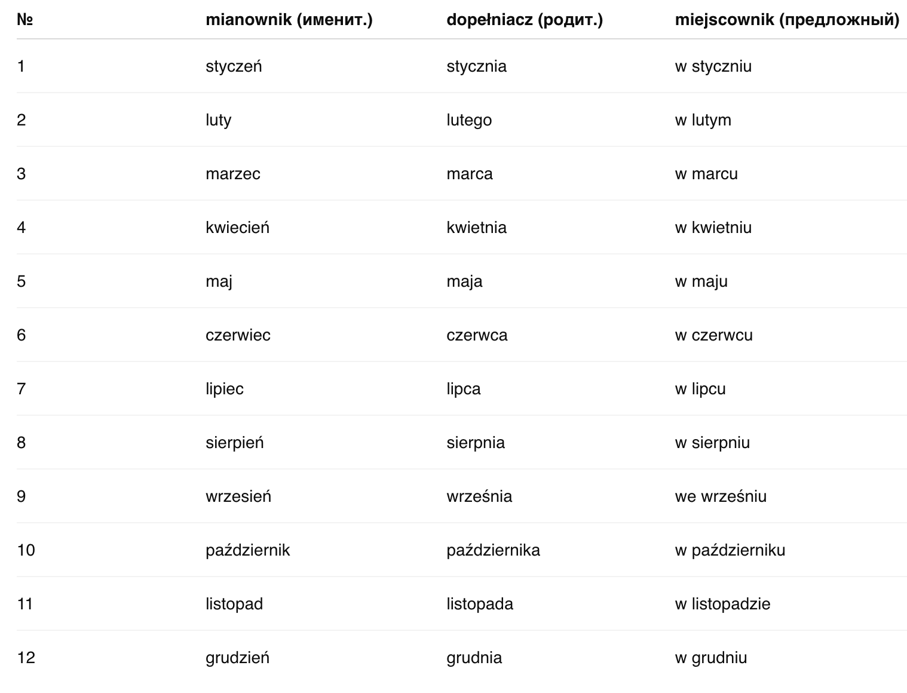
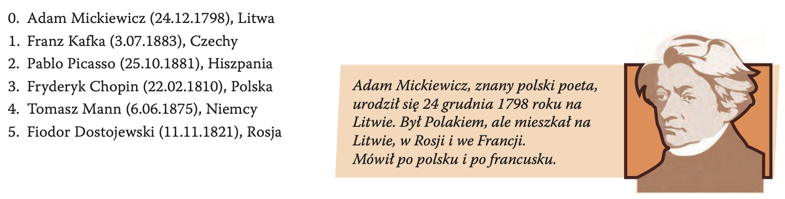
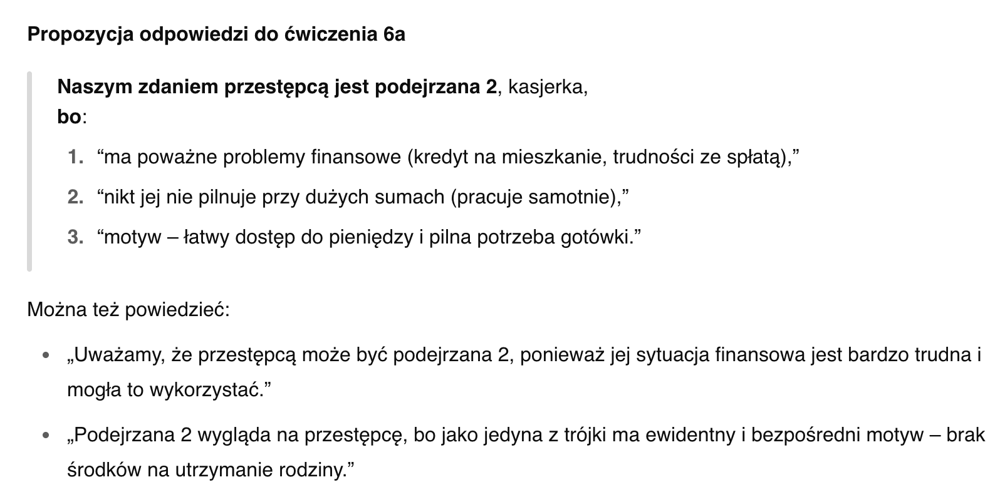
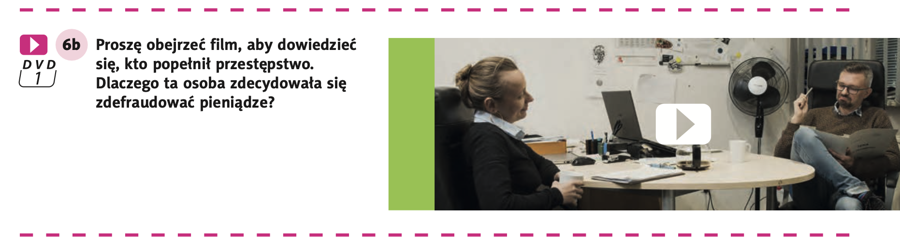

- (drugie zdjęcie) czternastego sierpnia tysiąc dziewięćset dziewięćdziesiątego czwartego roku ⇒ 14.08.1994
- (piąte zdjęcie) dwudziestego pierwszego września dwutysięcznego roku ⇒ 21.09.2000
- (czwarte zdjęcie) w dwa tysiące osiemnastym roku; w listopadzie ⇒ listopad 2018
- (pierwsze zdjęcie) w tysiąc osiemset osiemdziesiątym ósmym roku; w styczniu ⇒ styczeń 1888
- (trzecie zdjęcie) dwunastego kwietnia tysiąc dziewięćset siedemdziesiątego piątego roku ⇒ 12.04.1975
Hura po Polsku - 2
Temat 2 - To już historia.
Lekcja 01 - podawanie dat
- Освоить чтение, написание и склонение порядковых числительных и названий месяцев в контексте указания дат, а также научиться свободно использовать их в речи при вопросах о различных событиях и при сообщении дат.
Słownictwo nowe >>
 1_A - Proszę obejrzeć
fotografie i zdecydować, kiedy urodziły się te osoby.
1_A - Proszę obejrzeć
fotografie i zdecydować, kiedy urodziły się te osoby.

- czternastego sierpnia tysiąc dziewięćset dziewięćdziesiątego czwartego roku
- dwudziestego pierwszego września dwutysięcznego roku
- w dwa tysiące osiemnastym roku; w listopadzie
- w tysiąc osiemset osiemdziesiątym ósmym; w styczniu
- dwunastego kwietnia tysiąc dziewięćset siedemdziesiątego piątego roku
Odpowiedź
 1_B - Proszę uzupełnić tabelę.
1_B - Proszę uzupełnić tabelę.
Odmiana liczebników porządkowych (pierwszy, drugi, trzeci…)
- Mianownik – odpowiada na pytanie „kto? co?” – pierwszy, drugi, trzeci. Używamy, gdy mówimy, kto stoi na danej pozycji: „On jest pierwszy.”
- Dopełniacz – odpowiada na pytanie „kogo? czego?” – pierwszego, drugiego, trzeciego. Potrzebny np. po przyimkach typu „od”, w wyrażeniach dat: „Urodziłem się drugiego lutego.”
- Miejscownik – odpowiada na pytanie „o kim? o czym?” (po przyimkach w, o): – pierwszym, drugim, trzecim. Używamy go przy podawaniu dat w formie „w + miejscownik”: „Spotkanie jest w czwartym kwietnia.”
Jak tworzyć formy?
- Regularne liczebniki
(5.–19.): dodajemy końcówkę –ego w dopełniaczu i –ym/–im w miejscowniku: | piąty → piątego → piątym | siedemnasty → siedemnastego → siedemnastym | - Końcówki –tysięczny, –setny:
w dopełniaczu: –setnego/–tysięcznego, w miejscowniku: –setnym/–tysięcznym. „setny → setnego → setnym” - Liczebniki złożone (21., 32. itp.):
odmienia się obie części: dwudziesty pierwszy → dwudziestego pierwszego → dwudziestym pierwszym.
Podsumowanie:
- Mianownik: po prostu „pierwszy” itd.
- Dopełniacz: forma do podawania dat („drugiego maja”) i po „od”.
- Miejscownik: forma z „w” lub „o” („w czwartym czerwca”, „mówił o trzecim odcinku”).


Odpowiedź


 5_D - Proszę przeczytać datę
i miejsce urodzenia sławnych osób. Co jeszcze o nich wiemy?
5_D - Proszę przeczytać datę
i miejsce urodzenia sławnych osób. Co jeszcze o nich wiemy?

Odpowiedź
- 0. Adam Mickiewicz (24.12.1798), Litwa =>
- 1. Franz Kafka (3.07.1883), Czechy =>
- 2. Pablo Picasso (25.10.1881), Hiszpania =>
- 3. Fryderyk Chopin (22.02.1810), Polska =>
- 4. T omasz Mann (6.06.1875), Niemcy =>
- 5. Fiodor Dostojewski (11.11.1821), Rosja =>
6_A - W jednym z banków ktoś
zdefraudował dużą sumę pieniędzy. Policja podejrzewa trzy osoby. Proszę przeczytać ich
charakterystykę przygotowaną przez psychologa sądowego i zdecydować, kto może
być przestępcą. Proszę podzielić się na grupy, każda grupa przedstawia swoją hipotezę. Proszę
uzasadnić swój wybór.

Odpowiedź

6_B.
